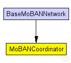
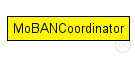

This documentation is released under the Creative Commons license
This documentation is released under the Creative Commons license(no description)
The following diagram shows usage relationships between types. Unresolved types are missing from the diagram. Click here to see the full picture.
The following diagram shows inheritance relationships for this type. Unresolved types are missing from the diagram. Click here to see the full picture.
| BaseMoBANNetwork (network) |
This network is exactly the same as baseNetwork existing among the examples of MiXiM, but the desired number of MoBAN coordinator modules have been added. Some nodes of type BaseNode use MoBANLocal module as their mobility module. Then those nodes will be considered as WBAN nodes. Those node have a parameter named "coordinatorIndex" that determines to which WBAN (coordinator) the node belongs. |
| Name | Type | Default value | Description |
|---|---|---|---|
| debug | bool |
debug switch |
|
| updateInterval | double |
Time interval to update the nodes position (seconds). |
|
| numNodes | int |
Number of sendor nodes belong to this WBAN |
|
| postureSpecFile | xml |
The input file that includes the specification of all postures |
|
| configFile | xml |
The configuration file for setting probability vectors, distributions and correlations |
|
| useMobilityPattern | bool |
Set if the logged mobility pattern is used. |
|
| mobilityPatternFile | string |
The input file for mobility pattern if it is going to be used. |
| Name | Value | Description |
|---|---|---|
| class | MoBANCoordinator |
simple MoBANCoordinator { parameters: @class(MoBANCoordinator); bool debug; // debug switch double updateInterval @unit(s); // Time interval to update the nodes position (seconds). int numNodes; //Number of sendor nodes belong to this WBAN xml postureSpecFile; // The input file that includes the specification of all postures xml configFile; // The configuration file for setting probability vectors, distributions and correlations bool useMobilityPattern; // Set if the logged mobility pattern is used. string mobilityPatternFile; // The input file for mobility pattern if it is going to be used. }
This documentation is released under the Creative Commons license